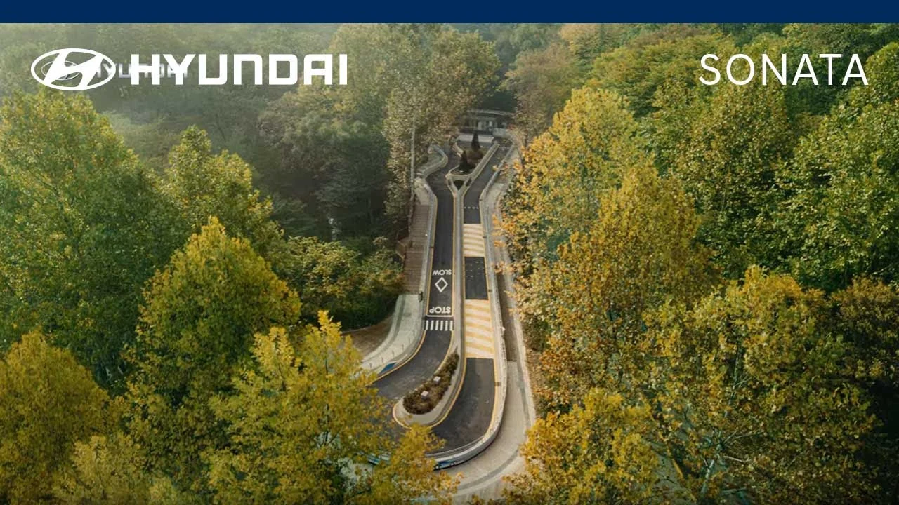
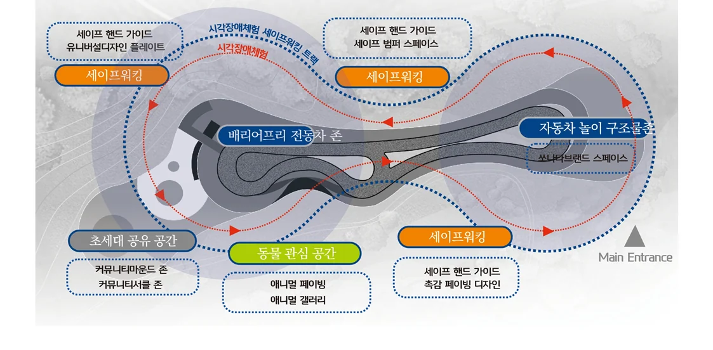
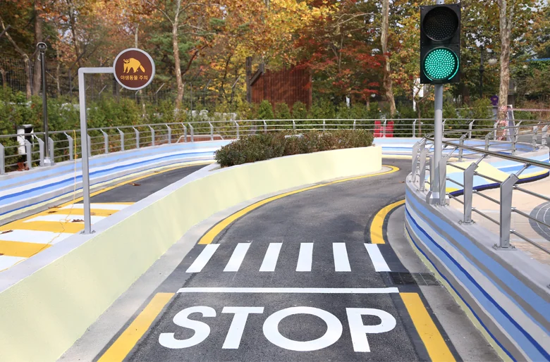
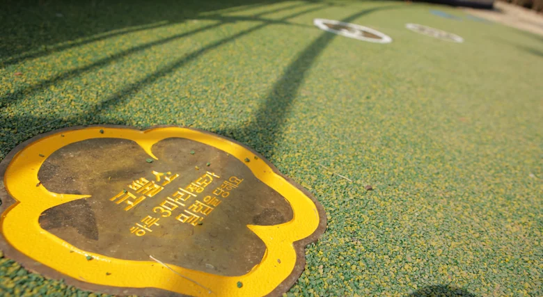
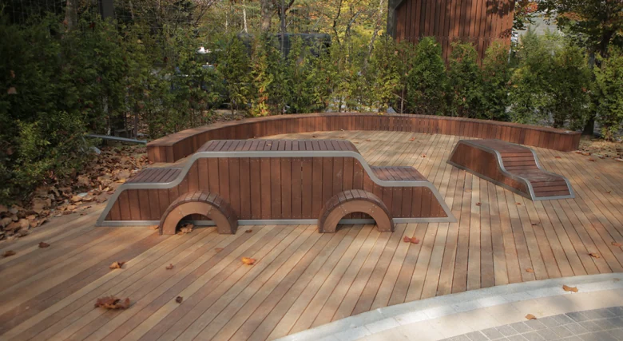

현대자동차 CSR 프로젝트 — 무장애 어린이 놀이터 디자인 기획
"무장애 어린이 놀이터 디자인 기획"
장애와 비장애, 구분 없는 공유놀이의 공간계획

놀이시간은 아이들이 삶을 준비하는 시간이다 (Haller,1987)
서울어린이 대공원 안의 계곡광장에 위치해 있는 어린이 자동차 테마파크 ‘차카차카 놀이터’는 어린이를 위한 현대자동차의 기술로 구현된 시각장애아용 미니 자동차를 중심으로 장애우가 불편 없이, 장애 없이 놀이를 즐길 수 있는 자동차 테마공원이다.
공간의 최우선적 기획 목표는 장애와 비장애의 구분과 의미를 두지 않고 놀이터를 찾는 모든 아이들이 차별 없이 함께 ‘놀이’를 즐기는 데 있다. 자동차놀이와 놀이 이 두가지의 가장 근본적인 공통기능을 모빌리티로 보고 자유로움을 통한 안전, 공유와 평등의 공간을 만드는 것으로 기획목표를 정립해 공간에서 고려해야할 세 가지의 실행카테고리를 설정했다.
| 안전 Barrier Free | 초세대 Transgeneration furniture | 동물 Animal Gallery |
| 세이프워킹 공간 | 초세대 공유 공간 | 동물 관심 공간 |
| 공간제공의 차별을 없애고 함께 모여 시각장애의 체험을 통해 평등의식과 배려의식 함양 | 다양한 계층 사용자에 의해 공간컨텐츠가 구성되는 플랫폼 개념의 초세대 공유 공간 | 동물복지에 관한 내용들을 보행 및 놀이환경 속에 배치하여 자연스럽게 인지 경험하는 동물 관심공간 |
차별 없는 무장애 놀이터는 위에 카테고리를 기반으로 다음과 같은 공간 전략을 세웠다. 첫째, 다함께 사용하는 공유디자인을 통해 누구나 함께 차별 없이 놀이하기이다. 누구나 공간과 놀이를 함께 공유하기 위해 수평적 공간계획으로 아이들은 서로의 놀이를 관찰하고 함께 놀이함을 공유하며 어른과 아이는 알맞은 눈높이에서 아이들의 놀이를 지켜보고 아이들은 부모의 모습과 소리로 안정감을 갖고 놀이 할 수 있다. 둘째, 신체특성을 배려한 에르고디자인을 통한 불편함 최소화하기는 놀이터 어디에서나 아이와 어른이 항상 모든 것을 감지하고 볼 수 있는 경관을 제공하며 거닐다 앉고, 정보를 얻고, 노니는 공간요소들이 최소한의 신체적 특성과 행태를 고려해 디자인 기획·배치되었다. 또한 셋째, 자동차에 대한 즐거움을 경험하는 경험디자인은 기획의 중심인 미니 자동차가 공간을 유연하게 활용할 수 있는 순환형 코스를 제공한다. 자동차 만큼이나 축소된 작은 도로는 일반적인 주행에 필요한 신호체계, 바닥사인, 안전주의사인, 교통험프, 안전한 장애물을 제공하여 순환도로 속에서 사용자가 다양한 도로체험을 할 수 있게 한다. 넷째, 쉽게 이해하고 사용할 수 있는 직관적인 디자인 계획하기 서울어린이 대공원은 가족단위의 사람들이 함께 찾는 장소로 세대를 아우르는 정보제공이 중요한 전략중 하나로 누구나 쉽게 공간의 기능에 대해 인지하고 정보를 습득 할 수 있는 직관적인 공간에 대한 정보제공을 한다.

또한 여가와 휴식이 결합한 형태의 서울어린이 대공원은 동물들이 가득한 동물원 공간의 역할을 가지고 있다. 이에 따라 자동차 테마를 지닌 공간이지만 동물원공간과 근접한 환경을 갖고 주변 야생동물들도 확인이 가능한 환경의 자연 속 공간으로 동물에 대한 정보와 관심유도의 특화페이빙과 갤러리를 계획했다.
CSR프로젝트는 ‘놀이’라는 범주안에서의 다양한 행위를 할 수 있도록 놀이의 카테고리를 분류하고 그에 따라 사용자를 배려할 수 있는 공간 전략을 통해 다양한 놀이(보는 것, 움직이는 것, 걷는 것 등)를 공간이 수용하고 포용하는 기획인 ‘사용자의 놀이 행태 중심의 놀이터’이다. 놀이를 통해 공간과, 공간에서의 활동, 즐거움을 함께 공유하는 것을 시작으로 짧게는 만남, 멀게는 함께 활동하고 사회를 경험하는 등 아이들의 삶에서 장애라는 것은 틀림이 아닌 다른 것이고 함께 놀이함을 통해 다름을 자연스럽게 이해하고 서로를 배려하는 것을 배우는 공간이 되어주는 가장 자연스럽고 친근한 공공공간임을 보여주고 있다.
 |  |  |
출처-키즈현대 차카차카 놀이터 ( | ||